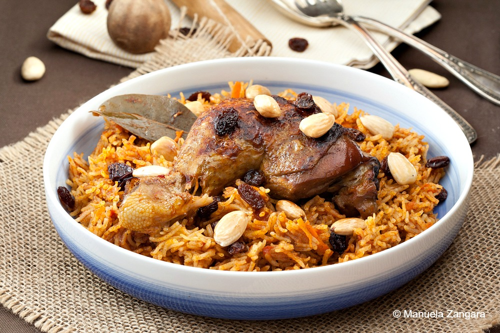

Saudi Traditional Kabsa
Prep: 40 mins
1 hr 30 Min - Cook time
2 hrs 10 mins - Total
8 Servings
INGREDIENTS
-
1/2 tbsp dried whole lime powder
-
1/2 tbsp ground allspice
-
2 tbsp all-purpose flour
-
1 onion, finely chopped
-
1/4 tbsp teaspoon ground cardamom
-
1/2 tbsp saffron
-
1 (3 pound) whole chicken, cut into 8 pieces
-
1/4 ts ground white pepper
-
1 tbs pinch ground cumin
-
1 tbs pinch ground coriander
-
3 1/4 tbs cups hot water
-
1 cube chicken bouillon
-
1/4 tbs cup tomato puree
Directions
-
First step:
- Mix together the saffron, cardamom, cinnamon, allspice, white pepper, and lime powder in a small bowl, and set the spice mix aside..
-
Second step:
- Melt the butter in a large stock pot or Dutch oven over medium heat. Stir in the garlic and onion; cook and stir until the onion has softened and turned translucent, about 5 minutes. Add the chicken pieces and brown them over medium-high heat until lightly browned, about 10 minutes. Mix in the tomato puree.
-
Third step:
- Stir in the canned tomatoes with their juice, the grated carrots, whole cloves, nutmeg, cumin, coriander, salt, black pepper, and the Kabsa spice mix. Cook for about 3 minutes; pour in the water, and add the chicken bouillon cube.
-
Fourth step:
- Bring the sauce to a boil, then reduce the heat to simmer and cover the pot. Simmer until chicken is no longer pink and the juices run clear, about 30 minutes.
-
Fifth step:
- Gently stir in the rice. Cover the pot and simmer until rice is tender and almost dry, about 25 minutes; add the raisins and a little more hot water, if necessary. Cover and cook for an additional 5 to 10 minutes or until the rice grains are separate.
User Comments
This is a very fun recipe to follow, because family makes it sweet and simple. This Kabsa is yummy !!!
- Ahmed S.
Is there another recipe similar to Kabsa? A: Bukhari Rice.
- Mohammed A.
This site can really engage my interest. Follow the recipe above and make it so! This Kabsa is number one.
- Adil Ghalib
LINKS
Search for other Saudi Kabsa recipes
Saudi National Day (Assignment 2 part 2)
Home